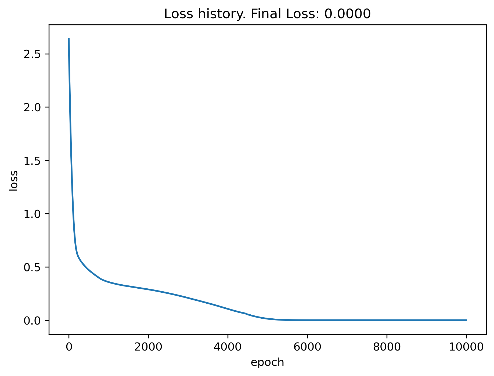
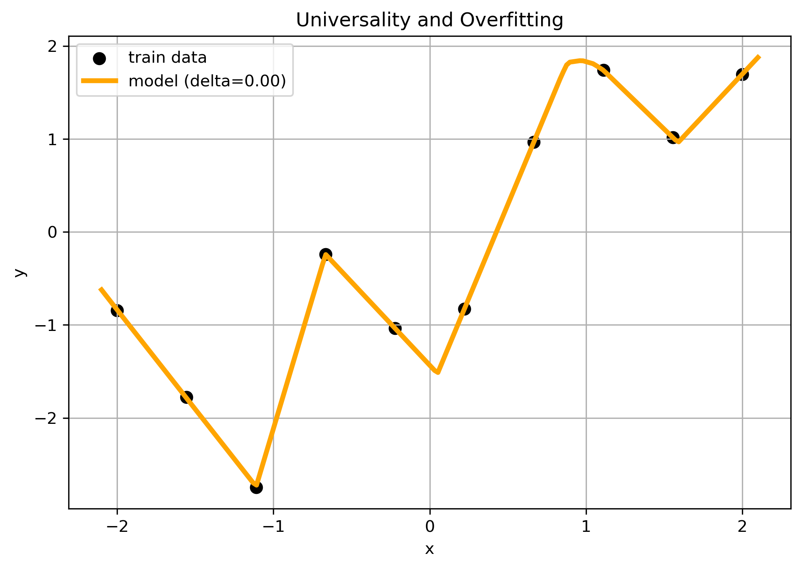
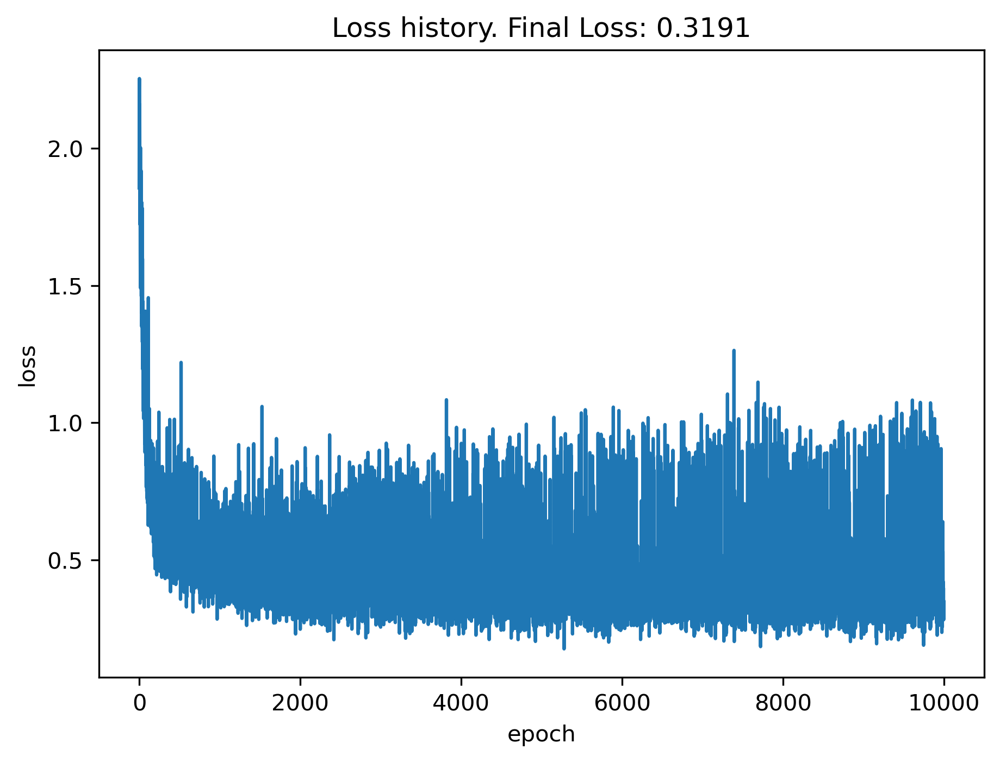
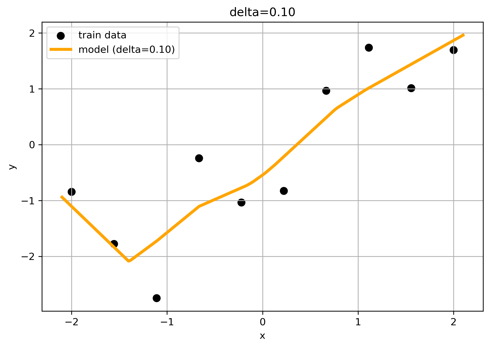

universal approximation theorem \(\to\) great flexibility to fit any function
methods to control overfitting
Generate synthetic data
Code
import numpy as npimport matplotlib.pyplot as pltimport torchimport torch.nn as nnseed =0torch.manual_seed(seed)np.random.seed(seed)n =10noise_sigma =0.75# synthetic data: y = x + epsilonx = torch.linspace(-2.0, 2.0, n).unsqueeze(1) y = x + noise_sigma * torch.randn_like(x) plt.figure(figsize=(7,5))plt.scatter(x, y, color='black', label='train data', s=50)plt.title("A simple example - again")plt.xlabel("x")plt.ylabel("y")plt.show()
Define Model and Training Loop
Here we define a relatively simple model class and a standardard training loop for convenience.
Notice: two parameters, \(\delta\) and \(\lambda\), to be used later.
Code
class Model1(nn.Module):def__init__(self, delta=0.0):super().__init__()self.delta = deltaself.net = nn.Sequential( nn.Linear(1, 16), nn.ReLU(), nn.Dropout(delta), nn.Linear(16, 1), )def forward(self, x):returnself.net(x)def model_train(model, X, y, epochs=1000, lr=0.05, lam=0.0):# standard training loop with MSE loss loss_func = torch.nn.MSELoss() opt = torch.optim.Adam(model.parameters(), lr=lr) loss_hist = [] model.train()for _ inrange(epochs): opt.zero_grad() loss_reg = lam *sum(p.pow(2).sum() for p in model.parameters()) loss = loss_func(model(X), y) + loss_reg loss.backward() opt.step() loss_hist.append(loss.detach().numpy())return loss_hist
def plot_losses(losses): plt.figure() plt.plot(losses) plt.ylabel('loss') plt.xlabel('epoch') plt.title(f'Loss history. Final Loss: {losses[-1]:.4f}') plt.show()plot_losses(loss_hist)

Model Predictions
Code
def plot_pred(x,y, x_new, model, title=""):# plot training data and model predictions# no not use dropout during evaluation ! model.eval() with torch.no_grad(): y_pred = model(x_new) plt.figure(figsize=(7,5))# training data plt.scatter(x, y, color='black', label='train data', s=50)# predictions plt.plot(x_new, y_pred.detach(), color='orange', lw=3, label=f"model (delta={model.delta:.2f})") plt.xlabel("x") plt.ylabel("y") plt.title(title) plt.grid(True) plt.legend() plt.tight_layout() plt.show()x_plot = torch.linspace(-2.1, 2.1, 200).unsqueeze(1)plot_pred(x,y, x_plot, model, title="Universality and Overfitting")

With Dropout
… adjust model (during training).
This sets to zero the output of a random fraction (10-20%) of neurons for each mini-batch (epochs in the simple example below). In this way the model predictions should be robust against the presence or absence of individual neurons and overfit less.
Code
model = Model1(delta=0.1)#print(summary(model))loss_hist = model_train(model, x, y, epochs=10000, lr=1e-3)plot_losses(loss_hist)plot_pred(x,y, x_plot, model, title=f"delta={model.delta:.2f}")


Dropout (\(delta>0\))
corresponds to ensemble of smaller networks within big one
makes learning harder
increases loss and loss fluctuations
reduces network capacity \(\to\) increased training time
forces redundant representations (c.f neurobiology: neurons are not reliable
makes model more robust \(\to\) less overfitting
accuracy \(\to\)reliability
only at training (pyTorch: model.eval at inference!)
or run multiple evaluations to estimate empirical probabilities
augment all samples of the training data in same proportions
Summary: Overfitting
Important
universal approximation theorem
arbitrary functions can be constructed (“piecewise-linear”)
non-linearity in model is crucial (here: ReLU)
relatively simple models: 49 parameters
number of data points: \(n = 10 \to\) overfitting
use regularizations: e.g. \(\lambda > 0\) or dropout \(\delta>0\)
always assess generalizability with test data
Source Code
---title: "Overfitting with DNN"jupyter: pytorchcategories: - overfitting - dropout - regularizationdraft: falsedescription: Universal Approximations can also overfit---::: {.callout-important}## Great power comes with great responsibility- universal approximation theorem $\to$ great flexibility to fit *any* function- methods to control overfitting:::## Generate synthetic data```{python}#| label: generate_data#| code-fold: trueimport numpy as npimport matplotlib.pyplot as pltimport torchimport torch.nn as nnseed =0torch.manual_seed(seed)np.random.seed(seed)n =10noise_sigma =0.75# synthetic data: y = x + epsilonx = torch.linspace(-2.0, 2.0, n).unsqueeze(1) y = x + noise_sigma * torch.randn_like(x) plt.figure(figsize=(7,5))plt.scatter(x, y, color='black', label='train data', s=50)plt.title("A simple example - again")plt.xlabel("x")plt.ylabel("y")plt.show()```## Define Model and Training LoopHere we define a relatively simple model classand a standardard training loop for convenience.Notice: two parameters, $\delta$ and $\lambda$, to be used later.```{python}#| label: define_modelclass Model1(nn.Module):def__init__(self, delta=0.0):super().__init__()self.delta = deltaself.net = nn.Sequential( nn.Linear(1, 16), nn.ReLU(), nn.Dropout(delta), nn.Linear(16, 1), )def forward(self, x):returnself.net(x)def model_train(model, X, y, epochs=1000, lr=0.05, lam=0.0):# standard training loop with MSE loss loss_func = torch.nn.MSELoss() opt = torch.optim.Adam(model.parameters(), lr=lr) loss_hist = [] model.train()for _ inrange(epochs): opt.zero_grad() loss_reg = lam *sum(p.pow(2).sum() for p in model.parameters()) loss = loss_func(model(X), y) + loss_reg loss.backward() opt.step() loss_hist.append(loss.detach().numpy())return loss_hist```## Train Model```{python}#| label: model_train%%timefrom torchinfo import summarymodel = Model1(delta=0.0)print(summary(model))loss_hist = model_train(model, x, y, epochs=10000, lr=1e-3)```## Loss History```{python}#| label: plot_historydef plot_losses(losses): plt.figure() plt.plot(losses) plt.ylabel('loss') plt.xlabel('epoch') plt.title(f'Loss history. Final Loss: {losses[-1]:.4f}') plt.show()plot_losses(loss_hist)```## Model Predictions```{python}#| label: predict#| classes: preview-imagedef plot_pred(x,y, x_new, model, title=""):# plot training data and model predictions# no not use dropout during evaluation ! model.eval() with torch.no_grad(): y_pred = model(x_new) plt.figure(figsize=(7,5))# training data plt.scatter(x, y, color='black', label='train data', s=50)# predictions plt.plot(x_new, y_pred.detach(), color='orange', lw=3, label=f"model (delta={model.delta:.2f})") plt.xlabel("x") plt.ylabel("y") plt.title(title) plt.grid(True) plt.legend() plt.tight_layout() plt.show()x_plot = torch.linspace(-2.1, 2.1, 200).unsqueeze(1)plot_pred(x,y, x_plot, model, title="Universality and Overfitting")```## With Dropout... adjust model (during training). This sets to zero the output of a random fraction (10-20%) of neuronsfor each mini-batch (epochs in the simple example below). In this way the model predictions should be robust against the presence or absence of individual neurons and overfit less.```{python}#| label: model_dropoutmodel = Model1(delta=0.1)#print(summary(model))loss_hist = model_train(model, x, y, epochs=10000, lr=1e-3)plot_losses(loss_hist)plot_pred(x,y, x_plot, model, title=f"delta={model.delta:.2f}")```::: {.callout-note}### Dropout ($delta>0$)- corresponds to ensemble of smaller networks within big one- makes learning harder- increases loss and loss fluctuations - reduces network capacity $\to$ increased training time- forces redundant representations (c.f neurobiology: neurons are not reliable - makes model more robust $\to$ less overfitting- accuracy $\to$ *reliability*- only at training (pyTorch: `model.eval` at inference!) - or run multiple evaluations to estimate empirical probabilities:::## With regularization... adjust cost function$$L(\theta) \to L(\theta) + \frac{\lambda}{2} \sum_l \theta_l^2$$This is also know as "L2 regularization" which encourages more balanced distribution of weights $\theta_l$. ... and parameter update$$\theta_{t+1} = \theta_t - \alpha \fract{\partial L}{\partial \theta_t} - \lambda \theta_t$$```{python}#| label: loss_regularizationdelta, lam =0.0, 0.1model = Model1(delta=delta)#print(summary(model))loss_hist = model_train(model, x, y, epochs=10000, lr=1e-3, lam=lam)plot_losses(loss_hist)plot_pred(x,y, x_plot, model,title=f"delta={delta:.2f}, lambda={lam:.2f}")```::: {.callout-note}### Loss Regularization- no change to model- learning less affected $\to$ smoother loss history- model is more robust $\to$ less overfitting- new hyperparameters:::## Get more data: Data Augementation- embedd into ML workflow- identify symmetries (invariances): shift, rotate, scale, crop, brightness- augment only training data- augment all samples of the training data in same proportions## Summary: Overfitting::: {.callout-important}- universal approximation theorem- arbitrary functions can be constructed ("piecewise-linear")- non-linearity in model is crucial (here: ReLU)- relatively simple models: 49 parameters- number of data points: $n = 10 \to$ overfitting- use regularizations: e.g. $\lambda > 0$ or dropout $\delta>0$- always assess generalizability with **test data**:::```{python}#| label: param_distribtion#| eval: false#| echo: false# actually the parameters in this simple example do not get overly large# (unlike polynomial models)# but the effect of L2 regularization can none-theless be observed # in shrinking the variance of the histogram all_params = torch.cat([p.data.flatten() for p in model.parameters()])plt.hist(all_params.numpy(), bins=50, edgecolor='k')plt.xlabel("Parameter value")plt.ylabel("Frequency")plt.title("Distribution of all model parameters")plt.show()```